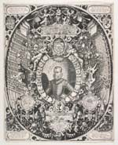
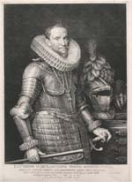

OOSTENDE VERLOREN, SLUIS GEWONNEN, 1604
Tentoonstelling in de Universiteitsbibliotheek van 12 augustus - 12
september 2004
Samenstelling: Dirk de Vries
Met bijdragen van Charles van den Heuvel, Anton van der Lem en Piet Lombaerde
Catalogus 1 [7]
Dirk de Vries & Piet Lombaerde
Inleiding
1 Vlaanderen en Zeeland op één kaart, ca. 1600
Flandria ditissimus, fertilissimus et amoenissimus totius orbis comitatus [...] || Zelandiae comitatus septemdecim Inferioris Germaniae Provinciis annumeratur / Arnoldus et Henricus Florentii a Langren fratres sculpserunt.
[Amsterdam : Cornelis Claesz.?, ca. 1600].
Gravure ; 40,5 x 55 cm.
CollBN 010-13-002.
¶ Haar orginaliteit ontleent deze gravure aan de samenvoeging van Vlaanderen en Zeeland in één kaartbeeld. Bij nadere beschouwing wordt duidelijk dat de grenzen ervan zodanig zijn gekozen dat daarbinnen het gehele stroomgebied van de Schelde met al haar zijrivieren van oorsprong tot monding valt, waarbij Gent exact in het midden van de kaart is komen te liggen. Het is deze rivier die de hechte geografische structuur vormt waardoor de twee provincies met elkaar verbonden zijn.
Van deze kaart, die door de gebroeders Van Langren ca. 1595 werd gegraveerd, verscheen ca. 1600 de hier getoonde tweede staat met kleine inhoudelijke wijzigingen. Daarna kwam de plaat in bezit van David de Meyne, en na hem werd Claes Jansz. Visscher de eigenaar.
2 De Zeeuwse en Vlaamse kusten, 1583
Beschrijvinghe vande Zeeusche Eijlanden, soe die op hare strome(n) geleghen zijn, met een deel vande zee custen van Vlaenderen enn Hollant / Lucas Aurigarius Enchusianus inventor. 1583.
[Leiden 1584].
Ets en gravure ; 33 x 52,5 cm.
In: L.J. Waghenaer, Spieghel der Zeevaerdt. Leiden : Ch. Plantijn, 1584.
CollBN Atlas 294.
¶ De Spieghel der Zeevaerdt van Waghenaer, de eerste gedrukte zeemansgids met kaarten, is uitgegeven in het jaar van de moord op Willem van Oranje, aan wie zijn atlas is opgedragen. Waghenaer kwam uit Enkhuizen, met Den Briel en Vlissingen één van de eerste steden die zich aan de zijde van de opstand schaarden. In de opmaak van zijn kaarten laat hij duidelijk zien aan wie de wettelijke regering van de Nederlanden moet worden toegekend. Met de wapenborden van Zeeland, Vlaanderen, Brabant en Holland verwijst hij rechtstreeks naar de Staten van deze provincies.
Toen deze kaart werd uitgegeven moest de strijd om de Vlaamse kustvlakte nog gevoerd worden. Ze toont de Zeeuwse en Vlaamse kusten vanuit zee gezien, hun toegankelijkheid en tevens kwetsbaarheid, met Walcheren, als maritiem bolwerk, centraal geplaatst.
3 Sluis omstreeks 1565
Sluyss / [door Jacob van Deventer].
Facsimile van het getekende origineel in de Biblioteca Nacional te Madrid.
[Alphen aan den Rijn 1995].
Kleurendruk ; 42 x 42 cm. Met bijkaart.
Uit: De stadsplattegronden van Jacob van Deventer. Map 7. Nederland. Zeeland. Alphen aan den Rijn 1995. Kaart nr. 90.
Dousa P 89 7217.
¶ Jacob van Deventer (ca. 1500-1575) kreeg in 1558 of kort daarna opdracht van Filips II om alle steden in de Nederlanden in kaart te brengen. Van de ongeveer 300 plattegronden die hij heeft gemaakt zijn er 222 bewaard. Omstreeks 1565 heeft hij de kleinere Vlaamse steden opgemeten.
4 Sluis omstreeks 1580
Slvys || Slusa. Teutonicae Flandriae opp. admodum elegans.
[Köln 1581].
Ets en gravure ; 29,5 x 41 cm.
Uit: G. Braun en F. Hogenberg, Urbium praecipuarum totius mundi. Liber tertius. Coloniae Agrippinae 1581.
CollBN P 37 N 71.
¶ Deze kaart uit het stedenboek van Braun en Hogenberg wijkt zowel in het stratenplan als in de bebouwing zodanig af van die van Van Deventer dat er een ander, evenwel onbekend, voorbeeld gebruikt moet zijn.
5 De herovering van Sluis door de hertog van Parma in 1587
Sluys / [gegraveerd door Frans Hogenberg].
[Köln 1587].
Ets en gravure ; 19 x 27 cm, 21 x 27 cm met tekst.
In: F. Hogenberg, Abbildungen zur Europäischen Geschichte in den J. 1535-1600. Köln 1570-1600.
CollBN 20077 B 4.
¶ Toen hij in de zomer van 1587 het beleg voor Sluis sloeg had de hertog van Parma (1545-1592), landvoogd sinds 1578, het grootste deel van de opstandige gewesten weer in het gareel van de Spaanse koning gebracht. In Vlaanderen waren nog maar twee steden in handen van de rebellerende Staten-Generaal overgebleven: Oostende en Sluis. Parma onderkende het belang van Sluis, dat eventueel als een uitvalsbasis van het landleger kon dienen ter ondersteuning van de ophanden zijnde Spaanse Armada. Ook kon van daaruit veel effectiever de aanval ingezet worden en blijven op de Zeeuwse en Hollandse handelsschepen. Na een wekenlang beleg, waarbij ook een schipbrug over het Zwin werd aangelegd, dwong Parma uiteindelijk op 5 augustus de stad tot overgave.
6 De grote tocht van het Staatse leger door Vlaanderen, 1600
Pourtraict du hardi et belligueux voyage faict par Son Excellence accompagné des Puissants nobles Estats des Provinces Unies Anno 1600 / Florentius Baltasar Delphe.
[Delft] : Floris Balthasar, 1603.
Ets en gravure ; 41,5 x 107 cm. Met negen kolommen Nederlandse tekst in boekdruk onder de prent.
CollBN 72 N 173.
¶ De grote tocht in juni 1600 door Vlaanderen van het Staatse leger onder bevel van Prins Maurits had oorspronkelijk ten doel het door de aartshertogen belegerde Oostende te ontzetten en de kapershaven Duinkerken te veroveren, maar zou een onverwachte apotheose krijgen in de ons zo bekende Slag bij Nieuwpoort. Dat is het ook wat deze prent in groot formaat in een doorlopend beeldverhaal laat zien. Allereerst de oversteek van de Schelde van twaalfhonderd schepen die het leger op de kust bij Philippine afzetten. Vandaar trekken twaalfduizend man infanterie en drieduizend cavaleristen in een lang lint door het Vlaamse land, via Eeklo, Maldegem en Brugge, richting Oostende, het eerste doel van de tocht, dat uitvoerig in een ring van verschansingen en inundaties is afgebeeld. Ook Duinkerken, dat buiten het op de hoofdkaart weergegeven gebied ligt, is met een afzonderlijke bijkaart vertegenwoordigd. Zover zou het niet komen. De aartshertogen wisten hun leger zo snel in staat van paraatheid te brengen dat Maurits aan het ontzet van Oostende niet toekwam en gedwongen werd slag te leveren op het strand bij Nieuwpoort. Dat grote wapenfeit kwam te laat om nog op deze prent te worden afgebeeld.
7 Zeegevecht met de galeien van Sluis bij de monding van het Zwin, 26 mei 1603
Zonder titel. / [gegraveerd door Floris Balthasar].
[Leiden : J. Orlers, 1610].
Ets en gravure ; 23 x 34,5 cm.
In: J.J. Orlers, Beschrijvinghe ende afbeeldingen van alle de victorien. Leiden 1610, tussen fo. 198 en fo.199. 1402 A 14
¶ Sinds de stationering in 1599 van enkele Spaanse galeien dreigde Sluis, naast Duinkerken en Nieuwpoort, een derde geducht kapersnest op de Vlaamse kust te worden, bovendien gevaarlijk dicht bij de monding van de Schelde en de havens op Walcheren. In de daaropvolgende jaren werd de vloot die vanuit Vlissingen haast continu het belegerde Oostende ravitailleerde dan ook keer op keer vanuit het Sluise Gat bedreigd en aangevallen. Zo probeerde ook de Spaanse commandant Frederico de Spinola op 26 mei 1603 de Staatse wachtschepen die bij de ingang van het Zwin lagen, met acht galeien te overmeesteren. Het zou evenwel op een debacle uitlopen: hij zelf en 800 bemanningsleden overleefden dit treffen niet.
8 De hoofdrolspelers: Maurits en Ambrogio de Spinola
a.Mauritius D.G. Aur. Princ. Co. Nass. Mar. | verae Vliss. Belg. Prov. Gubernator.
Toegeschreven aan Crispijn de Passe.[1600].
Ets en gravure ; 36 x 45 cm.
Prentenkabinet.
¶ Het portret van Maurits, gekeerd naar links, is geplaatst in een ovalen omlijsting met de wapens van door hem veroverde steden, omgeven door wapentuig en vaandels, het geheel gevat in een groter ovaal. In rechthoekige cartouches zijn boven het portret de slag op het strand bij Nieuwpoort en eronder het ruitergevecht bij Turnhout afgebeeld. De veroveringen van Geertruidenberg (1593) en Groningen (1594) hebben links- en rechtsonder een plaats gekregen.
b. Illustrissimus et excellentissimus princeps Ambrosius Spinola [...] Regi Catholico a consiliis status et belli, militiaeq. et aerarii regii in Belgio praefectus MDCXV / M. a Mierevelt pinxit ; J. Muller sculpsit.
1615. Gravure ; 30 x 32 cm.
Prentenkabinet.
¶ Ambrogio de Spinola, telg uit een adellijk geslacht van bankiers in Genua, werd in 1604 aangesteld als opperbevelhebber van het leger in de Zuidelijke Nederlanden. In zijn persoon kreeg Maurits te maken met een tegenstander in wie hij in de jaren voor het Twaalfjarig Bestand keer op keer zijn meerdere moest erkennen.
| a | b |
Beleg van Oostende, 1601-1604
9 De beginfase, 1601
Urbis munitissimae Ostendae || Urbis munitissimae Oostendae, ab Archiducae Austriae Alberto, summis viribus obsessae, oppugnataeque; cum munimentis utriusque partis adiacentibus, accuratissima delineatio [...].
Amstellodami Harmannus Allardi excudebat et Baptista Doetechomius sculp. [1601-1602].
Ets, ingekleurd; 38,5 x 52 cm.
CollBN P 73 N 38.
¶ Alle onderdelen van de vesting Oostende worden met cijfers geïdentificeerd, maar de legende ervan ontbreekt. De forten en versterkingen van de belegeraar worden met naam op de kaart aangeduid.
Deze voorstelling van Oostende en omgeving is interessant omdat ze duidelijk de beginfase van het beleg in 1601 weergeeft, alsook een goed beeld biedt van de nog ongeschonden binnenstad. De legers van aartshertog Albrecht zijn op twee plekken geconcentreerd, ten zuidwesten van de stad in de duinen rondom het fort Albertus en ten noordoosten van de stad in de duinen ter hoogte van het fort van Bredene. Beide forten vormen de uiteinden van een reeks schansen en forten die samen een circumvallatie rondom de belegerde stad vormen. Achtereenvolgens staan op deze linie: het fort Isabella, de schans Grooten dorst, het fort Sint-Catharina of Sint-Janssteen, de redoute van het Sint-Janssteen, fort Colombaye, de redoute van Colombaye. Een ringweg verbindt al deze forten onderling.
De Tuimeldijk, aangeduid als Den dyck, werd nog intact op deze kaart voorgesteld. De Geul, gelegen ten oosten van de stad, werd al aangegeven als de nieuwe haven, tegenover de oude westelijk gelegen haven.
De binnenstad van Oostende wordt gekenmerkt door een regelmatig schaakbordpatroon, waarlangs de huisgevels in opstand worden afgebeeld. Op de Grote Markt is de gevel van het oude stadhuis duidelijk zichtbaar, alsook een waterput opgesteld in het midden van het plein. De grote kerk, toegewijd aan Sint Petrus en Paulus, bevindt zich in het oosten van de stad. Zij zal zwaar gehavend uit het beleg komen en als een van de weinige gebouwen nog bewaard blijven.
Deze prent werd door Herman Allartsz. van Warmenhuysen, uitgever en boekdrukker te Amsterdam, opnieuw aangewend om in een tweede uitgave de figuren van de aartshertogen Albrecht en Isabella toe te voegen, vergezeld van hekeldichten. Deze herwerkte prent toont bovendien de doorgestoken Tuimeldijk, en er werden een aantal forten en legerkampen van de aartshertogen toegevoegd.
Ref.: Verbouwe, nr. 202; The New Hollstein, vol.4, nr. 10360; Debaere, p. 65.
Lit.: Simoni (1997), pp. 61-65.
Tweede ex.: Oostende, Stadsarchief, KP/G020.
| vorige pagina | volgende pagina |